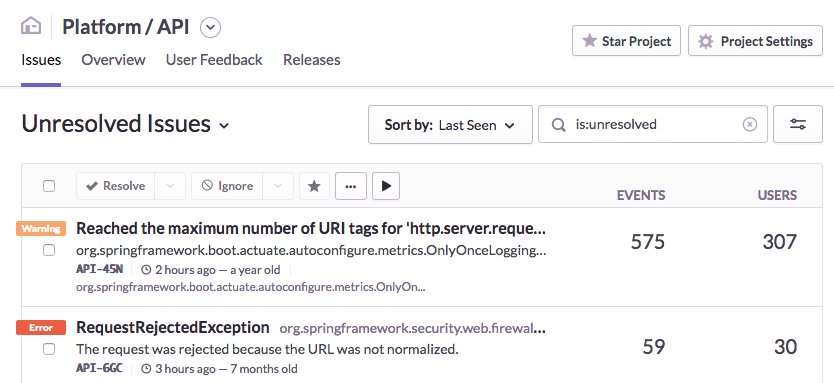
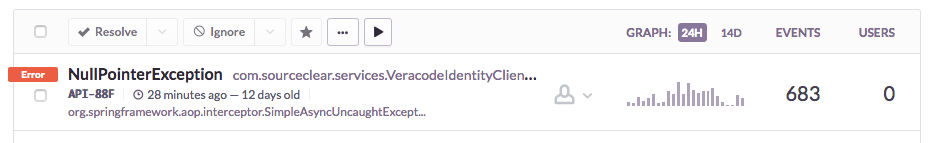
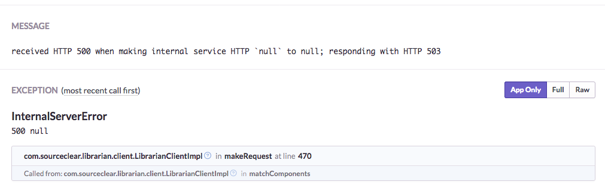

Monitoring as Testing
We've developed our app as sanely as we know how, applied every testing technique in the book, and our app is now live, with data from real users running through it. What comes next?
We're now past the point of detecting bugs early: now we want to ensure that we meet our availability targets, possibly with a bit of bug-finding so we know if things are not working. That's where monitoring comes in: it gives us ways to detect and recover from problems we didn't pick up earlier.
Monitoring is an umbrella term for a number of disparate activities, including the collection and visualization of metrics, management of alerts, or even lightweight smoke tests. They're all valuable and will be needed at some point, but in this chapter we'll focus on the automated aggregation of error conditions.
Sentry features heavily in this chapter, purely because it has an open source product that you can run yourself for free. There are lots of alternatives and everything here applies equally to all of them.
Sentry
As an app runs, errors will occur. We can recover from the expected ones, but because none of us are perfect (and also because our app ultimately runs on real hardware), unrecoverable errors will occur. A typical strategy is to log them and move on, because sometimes there really is no recourse but to abort to a known safe point (e.g. terminating the current request):
@PostMapping(value = "/jobs")
public ResponseEntity<Void> startBatchJob(@RequestParam(value = "id") long id) {
try {
runJob();
return ResponseEntity.ok().build();
} catch (Exception e) {
LOGGER.error("unexpected error", e);
return ResponseEntity.status(HttpStatus.INTERNAL_SERVER_ERROR).build();
}
}We might opt not catch errors as well, allowing them to go up the stack and be handled by the web framework, or even let them kill the server process and rely on a supervisor process or a cluster manager to restart it. These are more or less the same strategy because the error disappears into a log somewhere and no one is alerted.
This is fine for transient errors, but can we guarantee that every error we've ignored this way is of that nature?
Sentry gives us a different strategy. It's a tool for aggregating errors, and it gives us a place to collect data on the kinds of errors that have occurred in the app and analyze it to make decisions.
Prioritization

For a given app in Sentry, we can see a list of errors by type. There are also metrics like the number of affected users and the total number and frequency of occurrences.

We can use this to tell if an error is still occurring, if it stopped a while ago (maybe someone else fixed it?), or if very long-standing (earliest) or infrequent (graph) issue; maybe then it's not super important that we fix it right now.
Maybe it was a severe bug that affected only a few users, and we want to know who those are -- that information is available too.
Sentry also has some bells and whistles around issue tracking, so you can use it for that as well if you don't have somthing else.
Reproducibility

Having context around error conditions is key to reproducing them and coming up with fixes. Sentry captures the exception type, message, and stack trace by default.

User-defined metadata can also be associated with errors, so we can tag them with e.g. the version of the app it came from, or the users affected, or the specific inputs that caused it.
For client-side applications, things like the browser or OS it was running on, the version of e.g. the JVM the app was running on, and even memory dumps can be captured.
Integration
Integrating Sentry into an existing app is straightforward. Errors are sent over HTTP, so they can be sent manually if that's your thing, or in special cases.
A more principled way is to hook into the logging system, which ensures that if errors are handled consistently, they'll all appear in Sentry eventually.
<appender name="SENTRY" class="io.sentry.logback.SentryAppender">
<filter class="ch.qos.logback.classic.filter.ThresholdFilter">
<level>ERROR</level>
</filter>
</appender>
<logger name="ROOT">
<appender-ref ref="SENTRY" />
</logger>Frameworks like Spring Boot provide hooks for handling uncaught exceptions thrown from any controller thread, so they can be logged or handled in a central place. This is perfect for sending them to Sentry. An example integration might look like the following:
public class SentryHandler implements HandlerExceptionResolver {
private static final Logger LOGGER =
LoggerFactory.getLogger(SentryHandler.class);
private static final Lookup LOOKUP = new Lookup();
@Override
public ModelAndView resolveException(HttpServletRequest request,
HttpServletResponse response, Object handler, Exception ex) {
// Reentrancy check
if (SentryEnvironment.isManagingThread()) {
return;
}
SentryEnvironment.startManagingThread();
try {
Sentry.getStoredClient().sendEvent(new EventBuilder()
.withRelease(LOOKUP.get("release"))
.withSentryInterface(new HttpInterface(request))
.withSentryInterface(new ExceptionInterface(ex)));
} catch (Exception e) {
// No recourse here, unfortunately; is Sentry down?
LOGGER.error("Sentry failed", e);
} finally {
SentryEnvironment.stopManagingThread();
}
// Continue with the other configured HandlerExceptionResolvers
return null;
}
}Monitoring as Testing
One might see monitoring as a form of integration testing for unexpected errors. This is in contrast to unit tests, which check only for expected errors.
- Each logging statement of this form
try {
// do something
} catch (E e) {
LOGGER.error("unexpected", e);
}can be seen as an assertion that the code in the try block does not throw the exception E.
Uncaught exceptions are violations of the implicit assertion that all methods in the stack trace do not throw.
Violations of these assertions don't cause the app itself to crash (as
assertstatements would, which is why they can be (and are often) turned off). They are, however, surfaced in Sentry.
Continuing the testing metaphor, these assertions have real inputs, unlike the synthetic inputs one comes up with in unit tests, or the artificial inputs one gets from fuzzing. This means that if you put in the work to have consistent error-handling, you can get a lot of mileage out of Sentry and reproducing bugs will become significantly easier.
As an integration testing method, monitoring also finds certain classes of bugs trivially, which is why we recommend using a mix of testing methods and not spending an inordinate amount of time on exhaustively covering paths with unit tests.
Finally, this method of integrating Sentry pairs well with fuzzing, providing a more granular oracle than one would have if relying only on, say, 5xx status codes.